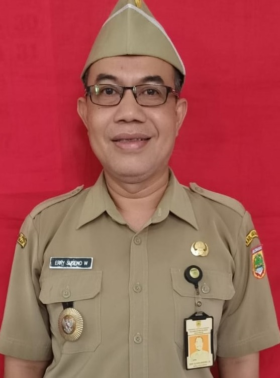

(269 ha)
Sejarah Desa Wirun
Desa Wirun merupakan salah satu desa wisata yang paling dikenal di Sukoharjo karena banyaknya potensi wisata yang dimiliki. Desa ini terletak di Kecamatan Mojolaban, Kabupaten Sukoharjo, dan memiliki akses yang mudah untuk dituju dari Kota Solo dan Karanganyar. Berjarak kurang lebih satu kilometer dari Kota Solo, Desa Wirun menjadi lokasi yang banyak dikunjungi oleh wisatawan lokal hingga mancanegara.
Salah satu potensi terbesar yang membuat Desa Wirun dikenal secara global adalah pembuatan kerajinan gamelan oleh para warga desa. Desa Wirun disebut sebagai pusat kerajinan gamelan terbesar di dunia karena sering mengekspor ke berbagai wilayah di dalam dan luar negeri. Dari catatan, industri kerajinan gamelan di Desa Wirun sudah muncul sejak tahun 1956, dirintis pertama kali oleh Reso Wiguno. Dorongan kebutuhan ekonomi menjadi latar belakang home industri tersebut berkembang, selain juga karena Kecamatan Mojolaban bukanlah wilayah dengan hasil pertanian yang berlimpah. Selain gamelan, kerajinan yang digeluti sebagai mata pencaharian warga setempat adalah kerajinan kain jumputan yang telah diekspor ke luar negeri, wayang kertas, keris, genteng, batik kayu, dan budidaya tanaman bonsai.
Suguhan kesenian lokal seperti kethoprak, jathilan, dan karawitan menjadi daya tarik tersendiri untuk menyambut para turis asing yang berwisata ke Desa Wirun. Para wisatawan yang didominasi warga negara Belanda biasanya datang untuk menetap selama satu hingga dua hari untuk belajar tentang pembuatan kerajinan seperti gamelan dan wayang di rumah-rumah penduduk. Karena lokasinya yang relatif cukup jauh dari kawasan Kota Solo, rumah penduduk setempat pun banyak yang disewakan bagi warga asing dan wisatawan lokal pada masa-masa ramai kunjungan wisatawan.
Visi & Misi
"Membangun Desa Wirun Lebih Maju dan Berbudaya"
Visi disusun dalam RPJM Desa untuk masa 8 tahun.
- Mewujudkan dan mengembangkan kegiatan keagamaan untuk menambah keimanan dan ketakwaan kepada Tuhan Yang Maha Esa.
- Mewujudkan dan mendorong terjadinya usaha kerukunan antar dan intern warga masyarakat yang disebabkan adanya perbedaan agama, keyakinan, organisasi, dan lainnya dalam suasana saling menghargai dan menghormati.
- Membangun dan meningkatkan hasil pertanian dengan penataan pengairan, perbaikan jalan sawah, jalan usaha tani, pemupukan, dan pola tanam yang baik.
Poin misi berikutnya belum tercantum (perlu verifikasi).
Pemerintahan Desa

Erry Suseno Wibowo, S.E.Kepala Desa Wirun
 Struktur Organisasi Pemerintah Desa Wirun (klik untuk memperbesar)
Struktur Organisasi Pemerintah Desa Wirun (klik untuk memperbesar)| Sekretaris Desa | Hartoyo |
| Kaur Keuangan | Ari Bintoro, S.Pd. |
| Kaur Tata Usaha & Umum | Joko Narwanto |
| Kaur Perencanaan | Ricky Purnomo Jati, S.Kom. |
| Kasi Pemerintahan | Nur Rohmah Junitasari, A.Md. |
| Kasi Pelayanan | Bambang Suprianto, S.T. |
| Kasi Kesejahteraan | Joko Purnomo, S.Pd. |
| Kepala Dusun I | Teguh Rahayu Purnomo, S.P. |
| Kepala Dusun II | Ari Bintoro, S.Pd. |
| Kepala Dusun III | Budi Harto |
| Kepala Dusun IV | Andi Nurtama |
Kedudukan, Tugas & Fungsi
Kepala Desa
Tugas: menyelenggarakan pemerintahan desa, melaksanakan pembangunan desa, pembinaan kemasyarakatan desa, dan pemberdayaan masyarakat desa.
Fungsi:
- Menyelenggarakan pemerintahan desa: tata praja pemerintahan, penetapan peraturan di desa, pembinaan masalah pertanahan, pembinaan ketenteraman dan ketertiban, administrasi kependudukan, serta penataan dan pengelolaan wilayah.
- Melaksanakan pembangunan: sarana prasarana perdesaan, serta bidang pendidikan dan kesehatan.
- Pembinaan kemasyarakatan: pelaksanaan hak dan kewajiban masyarakat, partisipasi masyarakat, keagamaan, dan ketenagakerjaan.
- Pemberdayaan masyarakat: sosialisasi dan motivasi masyarakat di bidang budaya, ekonomi, politik, lingkungan hidup, pemberdayaan keluarga, pemuda, olahraga, dan karang taruna.
- Menjaga hubungan kemitraan dengan lembaga masyarakat dan lembaga lainnya.
Sekretariat Desa
Tugas: membantu Kepala Desa dalam bidang administrasi pemerintahan.
Fungsi:
- Urusan ketatausahaan: tata naskah, administrasi surat menyurat, arsip, dan ekspedisi.
- Urusan umum: penataan administrasi perangkat desa, penyediaan prasarana perangkat desa dan kantor, penyiapan rapat, pengadministrasian aset, inventarisasi, perjalanan dinas, dan pelayanan umum.
- Urusan keuangan: administrasi keuangan, sumber pendapatan dan pengeluaran, verifikasi administrasi keuangan, serta administrasi penghasilan Kepala Desa, Perangkat Desa, BPD, dan lembaga pemerintahan desa lainnya.
- Urusan perencanaan: menyusun rencana anggaran pendapatan dan belanja desa, menginventarisasi data pembangunan, monitoring dan evaluasi program, serta penyusunan laporan.
Kepala Urusan
Tugas: membantu Sekretaris Desa dalam urusan pelayanan administrasi pendukung pelaksanaan tugas-tugas pemerintahan.
Fungsi:
- Kaur Tata Usaha dan Umum: ketatausahaan (tata naskah, surat menyurat, arsip, ekspedisi), penataan administrasi perangkat desa, penyediaan prasarana perangkat desa dan kantor, penyiapan rapat, pengadministrasian aset, inventarisasi, perjalanan dinas, dan pelayanan umum.
- Kaur Keuangan: administrasi keuangan, sumber pendapatan dan pengeluaran, verifikasi administrasi keuangan, serta administrasi penghasilan Kepala Desa, Perangkat Desa, BPD, dan lembaga pemerintahan desa lainnya.
- Kaur Perencanaan: menyusun rencana anggaran pendapatan dan belanja desa, menginventarisasi data pembangunan, monitoring dan evaluasi program, serta penyusunan laporan.
Kepala Seksi
Tugas: membantu Kepala Desa sebagai pelaksana tugas operasional.
Fungsi:
- Kasi Pemerintahan: manajemen tata praja pemerintahan, menyusun rancangan regulasi desa, pembinaan masalah pertanahan, pembinaan ketenteraman dan ketertiban, perlindungan masyarakat, kependudukan, penataan dan pengelolaan wilayah, serta pendataan dan pengelolaan profil desa.
- Kasi Kesejahteraan: pembangunan sarana prasarana perdesaan, pembangunan bidang pendidikan dan kesehatan, serta sosialisasi dan motivasi masyarakat di bidang budaya, ekonomi, politik, lingkungan hidup, pemberdayaan keluarga, pemuda, olahraga, dan karang taruna.
- Kasi Pelayanan: penyuluhan dan motivasi pelaksanaan hak dan kewajiban masyarakat, meningkatkan partisipasi masyarakat, pelestarian nilai sosial budaya, keagamaan, dan ketenagakerjaan.
Kepala Dusun
Tugas: membantu Kepala Desa dalam pelaksanaan tugasnya di wilayahnya.
Fungsi:
- Pembinaan ketenteraman dan ketertiban, perlindungan masyarakat, mobilitas kependudukan, serta penataan dan pengelolaan wilayah.
- Mengawasi pelaksanaan pembangunan di wilayahnya.
- Pembinaan kemasyarakatan untuk meningkatkan kemampuan dan kesadaran masyarakat dalam menjaga lingkungannya.
- Upaya pemberdayaan masyarakat untuk menunjang kelancaran penyelenggaraan pemerintahan dan pembangunan.
Wilayah & Kependudukan
| Luas | 2,67 km² (269 ha); 7,56% luas kecamatan |
| Koordinat | 7°36′24″ LS, 110°51′18″ BT |
| Dukuh (7) | Gendengan, Kanggungan, Mertan, Mojosari, Ngambak Kalang, Pabrik, Wirun |
| RW / RT | 15 RW / 52 RT |
| Jarak ke kecamatan | 1 km |
| Jarak ke kabupaten | 9 km |
| Lahan sawah (irigasi teknis) | 166,00 ha (61,7%) |
| Pekarangan / bangunan | 96,00 ha |
| Lain-lain & kolam | 7,00 ha |
| Penduduk | 7.870 jiwa (L 3.954; P 3.916) |
| Persentase thd penduduk kecamatan (BPS) | 8,44% |
| Kepala keluarga (BPS) | 2.715 (L 2.141; P 574) |
| Punya Kartu Keluarga (BPS) | 2.724 |
| Kepadatan (BPS) | 2.950,19 jiwa/km² |
| Rasio jenis kelamin (BPS) | 99,37 |
Data Kependudukan Terintegrasi 2026
| Tingkat Pendidikan | Laki-laki | Perempuan | Total |
|---|---|---|---|
| Tidak / Belum Sekolah | 713 | 711 | 1.424 |
| Belum Tamat SD / Sederajat | 408 | 432 | 840 |
| Tamat SD / Sederajat | 619 | 727 | 1.346 |
| Tamat SMP / Sederajat | 723 | 697 | 1.420 |
| Tamat SMA / Sederajat | 1.140 | 1.025 | 2.165 |
| Diploma I / II | 10 | 18 | 28 |
| Akademi / Diploma III / Sarjana Muda | 88 | 118 | 206 |
| Diploma IV / Strata I | 232 | 224 | 456 |
| Strata II | 14 | 13 | 27 |
| Strata III | 0 | 1 | 1 |
| Status Perkawinan | Laki-laki | Perempuan | Total |
|---|---|---|---|
| Belum Kawin | 1.803 | 1.454 | 3.257 |
| Kawin | 1.993 | 2.048 | 4.041 |
| Cerai Hidup | 51 | 85 | 136 |
| Cerai Mati | 72 | 299 | 371 |
| Agama | Laki-laki | Perempuan | Total |
|---|---|---|---|
| Islam | 2.282 | 2.354 | 4.636 |
| Kristen | 27 | 27 | 54 |
| Katolik | 24 | 27 | 51 |
| Buddha | 0 | 1 | 1 |
| Hindu / Konghucu / Aliran Kepercayaan | 0 | 0 | 0 |
Sumber: Data Kependudukan Terintegrasi pada situs desa. Jumlah tiap tabel dapat berbeda dari total penduduk karena data diambil pada waktu berbeda. Data agama di atas berasal dari tampilan sebelumnya dan perlu diperbarui.
Potensi & Ciri Khas
Wirun masuk 500 Besar Anugerah Desa Wisata Indonesia (ADWI) 2023 dan terdaftar di Jadesta dengan kategori "Berkembang".
- Gamelan: sentra kerajinan gamelan dengan belasan perajin (besalen).
- Kerajinan lain: kain jumputan, wayang kertas, keris, genteng, batik kayu, tenun goyor, dan bonsai.
- Seni & budaya: kethoprak, karawitan, keroncong, reog, jathilan, dan pagelaran wayang orang.
- Tempat menarik: Embung Pengantin, Pura Shahasra, perajin wayang kertas "Mbah Brambang", dan pengolahan limbah plastik menjadi BBM.
- Kuliner khas: bakmi Jawa.

:quality(30):format(webp):focal(0.5x0.5:0.5x0.5)/solo/foto/bank/originals/Embung-Pengantin-yang-berada-di-Desa-Wirun.jpg)


Wisata, Pertanian & Peternakan (2025)
| Lokasi Objek Wisata | Luas (ha) | Pemanfaatan | Koordinat |
|---|---|---|---|
| Cagar Budaya | 1,00 | Aktif | -7,601161, 110,863096 |
| Komoditas | Luas Lahan (ha) | Perkiraan Hasil (ton) |
|---|---|---|
| Padi | 144,00 | 550,00 |
| Jenis Hasil Ternak | Hasil Produksi |
|---|---|
| Telur | 850,00 |
Sumber: Pidekso Terintegrasi (situs desa), tahun pelaporan 2025.
Ekonomi Desa: BUMDes (2026)
| Nama Usaha | Ketua | Tahun Berdiri | Kegiatan |
|---|---|---|---|
| Bintang Wijaya | Purwanto | 2016 | Pertemuan dengan anggota BUMDes desa 2 bulan sekali |
| BUMDes Bintang Wijaya | Purwanto | 2016 | Jual ATK, persewaan molen, jual sembako |
Sumber: Data Lembaga Ekonomi pada situs desa.
Lokasi Wisata
Embung Pengantin
Taman embung untuk wisata keluarga di belakang SPBU Wirun. Ada jembatan bambu, Gubug Asmara, spot sayap malaikat, gazebo, perahu motor, sepeda bebek air, dan kolam renang anak.
Sentra Kerajinan Gamelan
Belasan besalen (perajin). Wisatawan dapat melihat proses tradisional dari peleburan, penempaan, hingga penyetelan nada, lengkap dengan ritual selamatan.
Sahasra Adhi Pura (Pura Shahasra)
Pura tempat meditasi umat Hindu di Mojolaban yang juga dikunjungi wisatawan.
Perajin Wayang Kertas "Mbah Brambang"
Membuat wayang kertas sejak 1965, hasilnya dikirim hingga ke luar negeri.
Atraksi lain: pertunjukan kethoprak, karawitan, keroncong, reog, dan wayang orang; pengolahan limbah plastik menjadi BBM; kuliner bakmi Jawa. Sumber: Jadesta Kemenpar, Visit Jawa Tengah, Good News From Indonesia, The Jakarta Post.
Grafik Penduduk
Lokasi & Kontak
| Alamat | Dk. Gendengan RT 03 RW 03, Desa Wirun, Kec. Mojolaban, Kab. Sukoharjo, Jawa Tengah |
| Kode Pos | 57554 |
| Kode Kemendagri | 33.11.08.2003 |
| Kontak | - |
| Website | wirun-sukoharjo.desa.id |